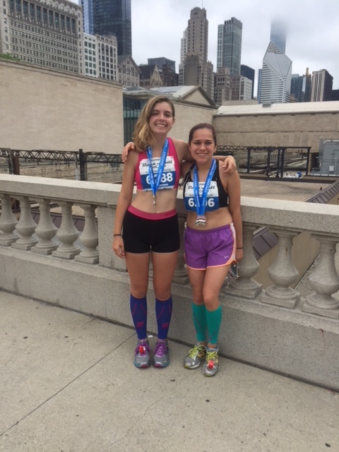
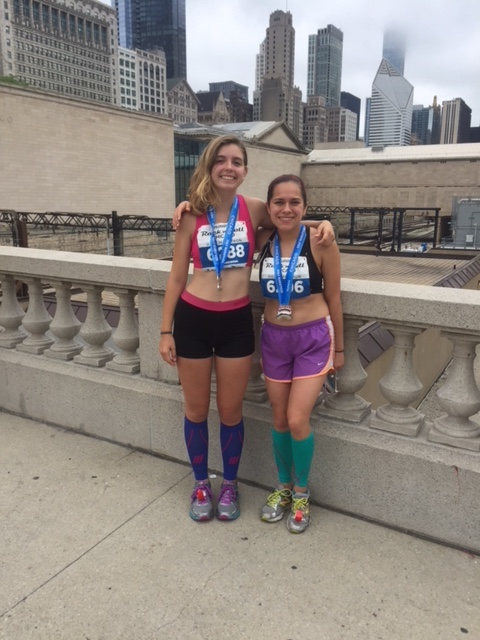

Who is Claire Mitchell?
Autobiography
I was born and raised in Nashville, Tennessee. I grew up living with my mom and my grandparents. When I was 8 I was diagnosed with severe dyslexia and struggled so much with reading that I couldn't keep up with my peers. Since I was so far behind I had to be dropped from the private school I was at and home schooled by my mom. When I was 9 my mom got married and we moved to Texas, where my stepdad was living at the time. When I arrived at Rylander Elementary, my new school in Texas, I was enrolled in multiple reading classes that gave me the tools to overcome dyslexia. That's when I learned that determination and hard work can help me achieve anything I my mind to. After I realized that I began to achieve in school instead of lag behind my peers. I started reading huge books, like the Harry Potter series, instead of avoiding them. I started entering school writing competitions, knowing that even if I didn't win I was still pushing myself to be a better student. Eventually I worked so hard that I was able to skip seventh grade and achieve more in school than I ever thought possible. The summer before I started eighth grade my family and I moved to Seattle, Washington. We stayed there for half a month then decided to move back to Tennessee to be close to family. There I started my first year at Hardin Valley Academy. I spent my freshman and sophomore years of high school there, involving myself in the cross country team and many stem programs. After my sophomore year I moved to Western Springs, Illinois, where I currently live now.
Little me:

Me now:

Hobbies:
*Film photography > click here
*Travling > I love experincing new cultures and challenging my views by seeing other people's perspectives on life. Whether it's travling with family for vacation or flying to a new country for an internship I'm up for the adventure.
Current placed I've been to > Ireland: India: Arizona: St. Louis: Places I want to go:
*Running > When most people think of running they envision a torturous activity that you couldn't pay them to do. On the other hand running is a huge part of my life. I started running cross country and track during my freshman year of highschool. I had just moved to a new school so being on the team was a great way for me to make friends, making going to practice an important part of my day. Being on the team has taught me the importance of working with my peers and having the determination to complete goals whether it's miles or classwork. Recently I have run two half marathons and I am currently training for the Illinois marathon in Urbana champaign.
 
